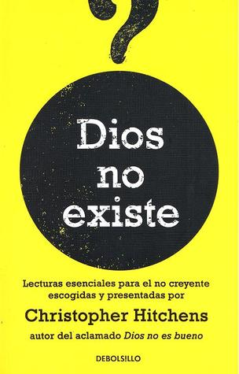

Dios no existe
Reseña por Jorge I. Zuluaga

Ver detalles · Ver reseña en GoodReads (necesita cuenta)
Eso es precisamente lo que me pregunté el día que lo saqué de mi atestada biblioteca (saturada de libros sin leer) y lo desempolvé para al fin "exorcizarlo".
Como lo esperaba, este es un libro lleno de "demonios", pero en el sentido original de la palabra; lleno de mentes e ideas absolutamente luminosas que, incluso desde los primeros tiempos, entendieron y denunciaron la falacia de todas las creencias sobrenaturales.
No me puedo haber divertido más viendo confirmadas (pero también llenándome de nuevas ideas) todas las posturas que había sostenido desde mi adolescencia tan solo por mi intuición y mi reducida cultura; en esta increíble colección de ensayos, esas mismas ideas están elaboradas por hombres y mujeres que han analizado por cientos de años el espinoso tema de la religión.
Alguien podría decir que ese es justamente el problema: es un libro que confirma mi sesgo ateísta y que posiblemente, si un intelectual publicara un libro titulado "Dios existe" con una compilación similar, los creyentes lo leerían y verían confirmadas también sus propias creencias.
Pero no.
Primero —y esta es solo una conjetura en la que tengo plena confianza—, dudo mucho que entre los intelectuales creyentes (un curioso oxímoron, por cierto), teólogos, científicos (confundidos) o filósofos posmodernistas y relativistas, se encuentre uno con la agudeza intelectual y valentía de Christopher Hitchens (que no descansa en paz porque ya se murió, y los muertos no descansan porque están muertos).
Y segundo, porque ningún creyente podría encontrar una colección tan diversa de autores, estilos y fuentes para soportar la ridícula idea de que existen seres sobrenaturales que se ocupan del mundo, deciden qué comemos y con quién y cuándo tenemos sexo.
Esa es una de las mejores características de esta colección de escritos: la diversidad.
En ella encontraremos desde relatos (o contrarrelatos) de experiencias después de la muerte de respetados filósofos, pasando por una carta enviada al niño seis mil millones, poesía, escritos satíricos, juiciosos análisis de la veracidad de los milagros, sesudos análisis gramaticales del Corán y estudios sobre la veracidad fáctica e incluso histórica de los "libros sagrados".
Y es que, si una cosa tienen las religiones y sus creencias en divinidades "metiches" (especialmente las monoteístas, que son en las que creen la mayoría de los fieles del mundo), es su pobrísima diversidad de temas y argumentos.
No habría manera de compilar tantos ensayos y tan diferentes para ampliar el argumento tomista de: "Dios es perfecto, solo lo que existe puede ser perfecto, entonces Dios existe". ¡Plop!
Como sucede con todo lo "gentil", con todo lo "laico", con todo lo "ateo", por definición el libro no es perfecto (de allí mi calificación de 4 estrellas).
Los primeros ensayos (los más antiguos) son difíciles de leer y, en mi opinión, desaniman fácilmente al lector menos comprometido.
Es claro que el propósito de Hitchens fue organizar los escritos en orden cronológico, pero también es claro que el libro no es simplemente una "enciclopedia" o un "libro de referencia" y debería seducir al lector que lo lee de corrido.
Yo, personalmente, habría comenzado la colección con algunos de los más brillantes y cortos ensayos que podrían seducir con facilidad a los lectores y que al mismo tiempo les ofrecerían una muestra fidedigna de la "intelligentsia" atea de todos los tiempos: "¿Cómo (y por qué) me hice infiel?", "Imagina que el cielo no existe", "Thank goodness", "Compendio de pacotilla intelectual", "Por qué no soy creyente", "Dios no existe", "¿Puede ser fundamentalista un ateo?", "Enseñanza de la Biblia y práctica religiosa", "El mundo y sus demonios", entre otros.
Algunos ensayos son casi imposibles de leer y de seguir, excepto si te pones en modo "estudiante de filosofía": el texto de Marx "Contribución a la crítica de la filosofía del derecho de Hegel" (en realidad no entendí por qué está en esta colección y me desanimó a leer la obra de Marx por incomprensible); "Conclusiones e implicaciones" de J. L. Mackie (un ensayo al que le faltan 900 páginas de contexto); "De los Rubaiyat" de Omar Jayam (por algo dicen que la poesía es como las matemáticas); y "De rerum natura" de Lucrecio (interesante leer los autores latinos originales... lástima que el abismo de 2.000 años se note inmediatamente). Entre otros.
El libro es una fuente casi infinita de citas y datos para los buenos ateos (o los "naturalistas", como defiende el filósofo moral A. C. Grayling que deberían llamarnos realmente); yo me he deleitado reproduciendo muchas de esas citas en mi red social favorita, Twitter. Pueden encontrar algunos de ellos si buscan el hashtag #NoMasReligion (soy el único que lo usa en esa red llena de "ateos mansos" y "agnósticos" respetuosos de las creencias ajenas).
Me encontré, entre los ensayos, mi primera aproximación al conocimiento del Islam (hay dos o tres escritos excelentes, eruditos y muy completos con una crítica ácida a los principios de esta religión semítica) y la conclusión no puede ser para mí otra (después de leer además toda la colección): si el cristianismo es la empresa criminal más grande de la historia, aquella con el número de almas reducidas a cenizas más numerosa de entre todas las que nacieron en malas ideas, el islamismo (que cuenta con su propio prontuario comparable) es sin duda alguna el más estúpido, abyecto y primitivo sistema de creencias que ha sobrevivido a la llegada de la era de la ciencia. Esta religión miserable ha empezado a competir con la horrenda religión cristiana por ser la mala idea que mayor sufrimiento producirá en el presente y en el futuro en nuestro planeta.
Cruzo los dedos para que mis hijos o mis nietos vean el día en que se extinga, como se extinguieron los cultos que exigían sacrificios de niños y mujeres de la antigüedad, este miserable virus mahometano y con él todas las pútridas ideas semíticas.
¿Seré muy optimista?
Reto a quien crea (así sea ligera o tímidamente) en los dioses de sus abuelos, a quien practique los extraños rituales de religiones de la Edad de Bronce traídos de Palestina a Occidente, para que lea este libro y siga creyendo públicamente en ellas sin avergonzarse un poco de su propia irracionalidad.